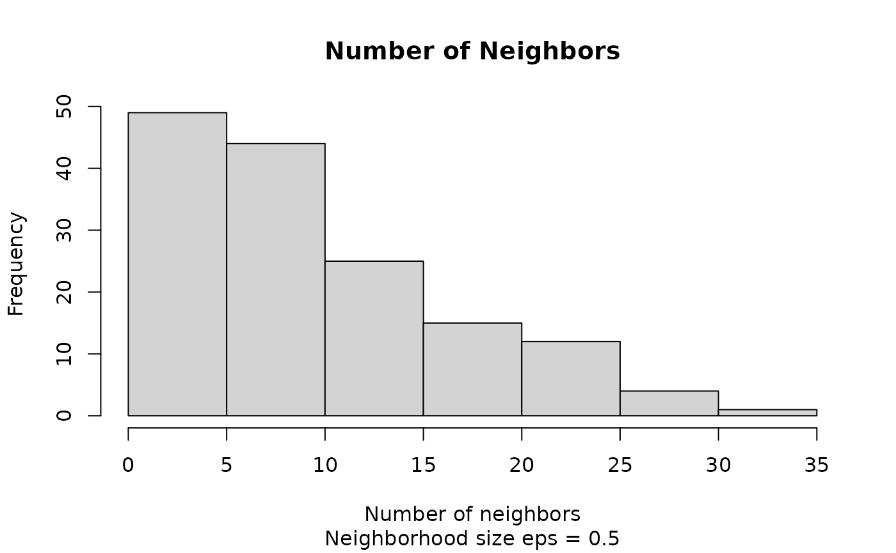
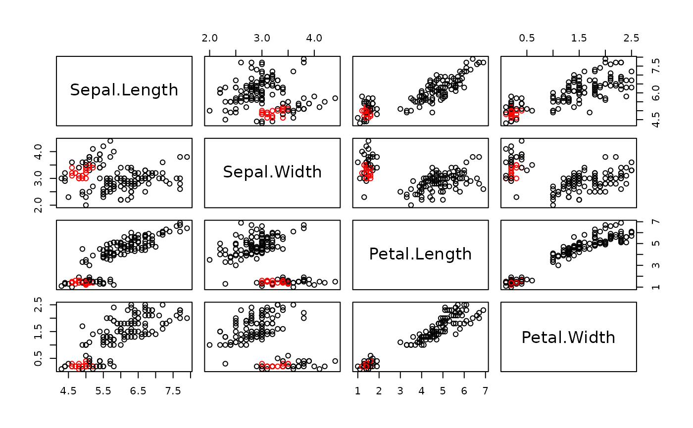
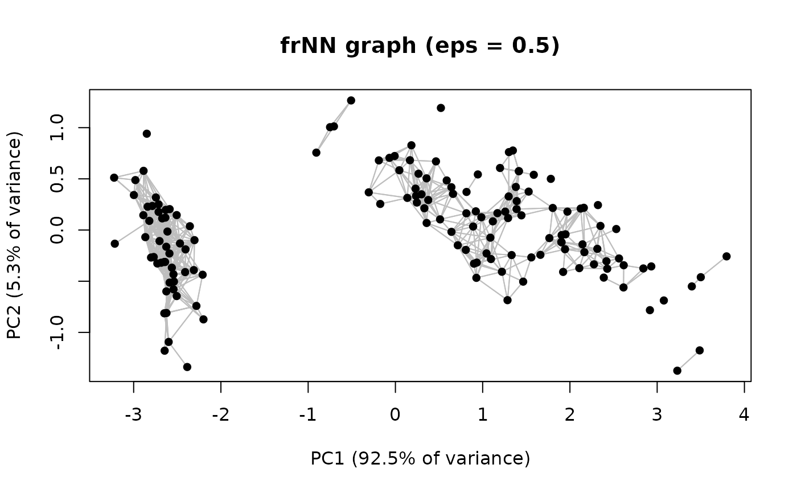
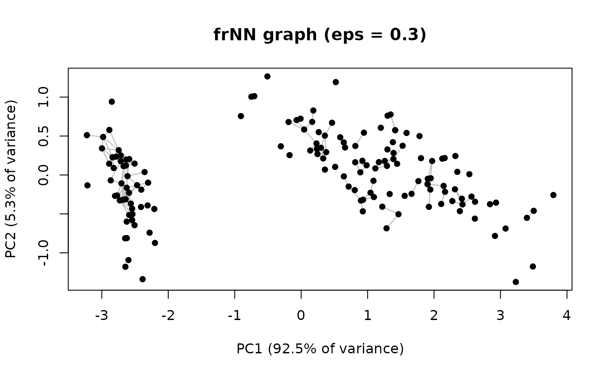
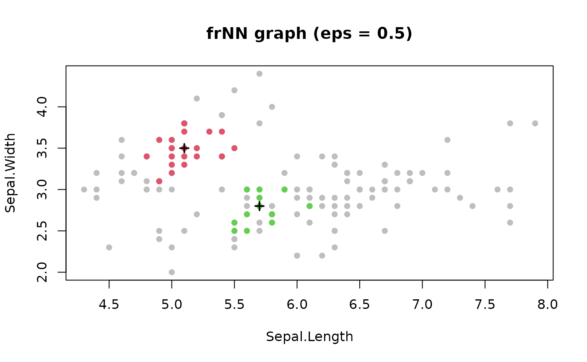
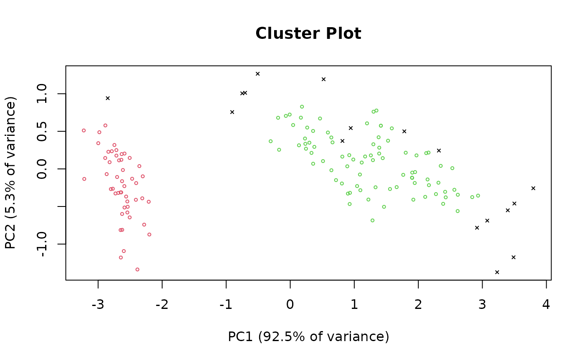

This function finds the fixed radius nearest neighbors (including distances) fast.
Usage
frNN(
x,
eps,
query = NULL,
sort = TRUE,
search = "kdtree",
bucketSize = 10,
splitRule = "suggest",
shrinkRule = "suggest",
approx = 0
)
# S3 method for class 'frNN'
sort(x, decreasing = FALSE, ...)
# S3 method for class 'frNN'
adjacencylist(x, ...)
# S3 method for class 'frNN'
print(x, ...)Arguments
- x
a data matrix, a dist object or a frNN object.
- eps
radius of the neighborhood (a finite, non-negative number). Points within this distance are neighbors.
- query
a data matrix with the points to query. If query is not specified, the NN for all the points in
xis returned. If query is specified thenxneeds to be a data matrix.- sort
sort the neighbors of each point by distance (ties are broken by id)? This is expensive and can be done later using
sort().- search
nearest neighbor search strategy (one of
"kdtree","linear","dist"or"bdtree"). See the section on the search parameters.- bucketSize
max size of the k-d or bd tree leafs.
- splitRule
rule to split the k-d or bd tree. One of
"std","midpt","fair","sl_midpt","sl_fair"or"suggest"(SL stands for sliding). The default value"suggest"uses ANNs best guess.- shrinkRule
shrinking rule used to build the box-decomposition tree (only used for
search = "bdtree"). One of"none"(no shrinking, equivalent to a k-d tree),"simple","centroid"or"suggest". The default value"suggest"uses ANNs best guess.- approx
a non-negative number used for approximate nearest neighbors. All NN up to a distance of
eps / (1 + approx)are considered and none with a distance greater thaneps. The points in between might be considered. Some actual NN may be omitted, but the search will be faster. Ignored bysearch = "linear"and"dist".- decreasing
for
sort(), sort the neighbors by decreasing distance instead of increasing distance?- ...
further arguments (ignored).
Value
frNN() returns an object of class frNN (subclass of
NN) containing a list with the following components:
- id
a list with one integer vector per point in
x(orquery). Each vector contains the ids (row numbers inx) of the fixed radius nearest neighbors. A point without neighbors has an empty vector (integer(0)). The list is named with the row names if available.- dist
a list with the distances (same structure as
id).- eps
neighborhood radius
epsthat was used.- sort
logical; are the neighbors of each point sorted by increasing distance (with ties broken by id)?
- metric
used distance metric. This is
"euclidean"for data matrices. For a dist object, it is the method stored in the object (which can beNULL).
adjacencylist() returns a list with one entry per data point in x. Each entry
contains the id of the nearest neighbors.
Details
If x is specified as a data matrix, then Euclidean distances and fast
nearest neighbor lookup using a k-d tree (default), a box-decomposition tree
or linear search are used (see the section on the search parameters).
All points within a distance of eps of a point (including points at
exactly distance eps) are its neighbors.
Sorting and self-matches
Sorting: With
sort = TRUE(default), the neighbors of each point are ordered by increasing distance and ties are broken by id. Withsort = FALSE, the neighbors are returned in no particular order, which avoids the cost of sorting. AfrNNobject can be sorted later usingsort().Self-matches: If no
queryis specified, then self-matches are removed. Ifqueryis specified, then a query point that is also inxis returned as its own neighbor (at distance 0).
Using a frNN object as x
If x is a frNN object, then the neighborhoods are reduced to the
smaller radius eps. An error is raised if eps is larger than the radius
stored in x. All other arguments are ignored.
Input requirements
xcan be a numeric matrix, a data.frame with only numeric columns, a dist object or afrNNobject.queryneeds to be a numeric matrix or data.frame with the same number of columns asx, and can only be used ifxis a data matrix.
Memory
The size of the result grows with the number of neighbors of all points, which
can approach \(O(n^2)\) for a large eps. Choose eps carefully for large
data sets.
Creating a frNN object from scratch
A frNN object is a list with class c("frNN", "NN") and the components
described in the value section. You need to supply at least id and eps.
dist is needed for sorting and plotting, and sort should be set to
FALSE unless the neighbors are already sorted. metric is informational.
Details on the search parameters:
searchcontrols what method is used ifxis a data matrix. Available methods are:"kdtree"uses a Euclidean k-d tree to speed up NN search. This is the default with good overall performance."bdtree"uses a box-decomposition tree. Its spatial boxes can, in addition to splitting, also shrink. According to the ANN authors, this tree type may be faster than a k-d tree on tightly clustered data."linear"performs linear search directly on the data."dist"precomputes Euclidean distances first usingdist(). While fast for small data sets, the memory requirements for the distance matrix grow with \(O(n^2)\).
The trees and linear search use the highly optimized ANN library (Mount and Arya, 2010) for Euclidean distances.
If
xis a distance matrix, thensearchis ignored and"dist"is used.Tree specific parameters
bucketSize,splitRuleandshrinkRulecontrol how the tree is built.bucketSizeandsplitRuleapply to k-d and bd trees;shrinkRuleapplies only to bd trees ("none"gives a tree that behaves like a k-d tree).approxuses the approximate fixed-radius search implemented in ANN. All neighbors up to a distance ofeps / (1 + approx)are considered and none with a distance greater thaneps. The points in between might be considered, so some actual neighbors may be omitted. This can lead to a significant speedup. The defaultapprox = 0gives exact results.approxis only used by the tree-based searches. For more details see Mount and Arya (2010).
Handling of NAs:
The tree-based searches and search = "linear" cannot handle NA, NaN or
infinite values in the data (in x or query); an error is raised. (The ANN
library does not check its input and would silently return wrong results.)
With search = "dist", the distances are calculated by dist(), which
leaves out coordinates that are NA for a pair of points and scales up
the remaining sum. These distances are not exactly Euclidean distances.
The resulting distance matrix (and a dist object supplied as x)
cannot contain NAs, which happens, for example, if a point has only
NA values. Otherwise, remove or impute missing values before
performing the search.
References
David M. Mount and Sunil Arya (2010). ANN: A Library for Approximate Nearest Neighbor Searching, http://www.cs.umd.edu/~mount/ANN/.
Examples
data(iris)
x <- iris[, -5]
# Example 1: Find fixed radius nearest neighbors for each point
nn <- frNN(x, eps = .5)
nn
#> fixed radius nearest neighbors for 150 objects (eps=0.5).
#> Distance metric: euclidean
#>
#> Available fields: dist, id, eps, metric, sort
# Number of neighbors
hist(lengths(adjacencylist(nn)),
xlab = "Number of neighbors", main = "Number of Neighbors",
sub = paste("Neighborhood size eps =", nn$eps))

# Explore neighbors of point i = 10
i <- 10
nn$id[[i]]
#> [1] 35 2 31 13 26 50 30 46 3 4 8 36 12 48 40 29 27 1 7 18 41
nn$dist[[i]]
#> [1] 0.1000000 0.1732051 0.1732051 0.1732051 0.2000000 0.2645751 0.2645751
#> [8] 0.2645751 0.3162278 0.3162278 0.3316625 0.3464102 0.3464102 0.3464102
#> [15] 0.3741657 0.4472136 0.4472136 0.4690416 0.4795832 0.5000000 0.5000000
plot(x, col = ifelse(seq_len(nrow(iris)) %in% nn$id[[i]], "red", "black"))

# get an adjacency list
head(adjacencylist(nn))
#> [[1]]
#> [1] 18 5 40 28 29 41 8 50 38 22 49 27 20 47 36 12 11 32 37 21 35 44 10 24
#>
#> [[2]]
#> [1] 35 46 13 10 26 31 36 3 50 4 30 48 8 40 12 29 27
#>
#> [[3]]
#> [1] 48 4 7 13 46 43 30 35 2 36 10 50 31 39 12 8 41 9 38 26 40
#>
#> [[4]]
#> [1] 48 30 31 3 13 46 39 43 9 35 10 7 2 12 26 50
#>
#> [[5]]
#> [1] 38 1 18 41 8 40 28 20 22 29 47 50 49 27 12 11 36 44 7
#>
#> [[6]]
#> [1] 19 11 49 45 20 47 17 22 33 34
#>
# plot the fixed radius neighbors (and then reduced to a radius of .3)
plot(nn, x)

plot(frNN(nn, eps = .3), x)

## Example 2: find fixed-radius NN for query points
q <- x[c(1,100),]
nn <- frNN(x, eps = .5, query = q)
plot(nn, x[, 1:2], col = "grey")
points(q, pch = 3, lwd = 2)

## Example 3: a precomputed frNN object can be used for DBSCAN
nn <- frNN(x, eps = .5)
db <- dbscan(nn, minPts = 5)
db
#> DBSCAN clustering for 150 objects.
#> Parameters: eps = 0.5, minPts = 5
#> Using euclidean distances and borderpoints = TRUE
#> The clustering contains 2 cluster(s) and 17 noise points.
#>
#> 0 1 2
#> 17 49 84
#>
#> Available fields: cluster, eps, minPts, metric, borderPoints
clplot(x, cl = db)
